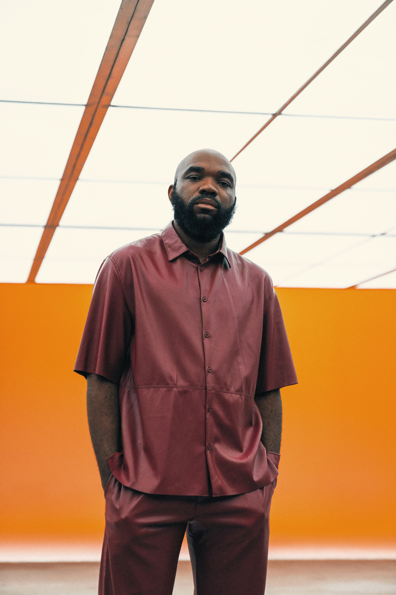

Our History
TechCon started in 2010 as a small gathering of tech enthusiasts and has grown into a global event that welcomes thousands of attendees each year. We've hosted events in major cities around the world and featured cutting-edge technologies in AI, cybersecurity, cloud computing, and more.

Our Mission
Our mission is to bring together industry leaders, innovators, and aspiring tech professionals to share knowledge, foster collaboration, and inspire future breakthroughs in technology. TechCon is committed to inclusivity, diversity, and sustainability in tech.

Notable Past Speakers
Jane Doe
Jane is a cybersecurity expert who has helped shape digital safety protocols used worldwide.
John Smith

CEO of FutureTech and pioneer in artificial intelligence applications in education and health.
Ada Bright
A passionate Web3 evangelist, Ada empowers communities to build with blockchain technologies.